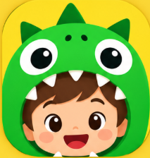

01 · Busca
Ache pelo nome.
Arquivos, pastas e programas num campo só. O resultado aparece enquanto você digita.

Tex Baixar para WindowsAche qualquer arquivo em segundos e nunca mais perca o que você copiou.
Digite a conta na busca e o resultado aparece em cima da lista. Enter copia.
Shift + Enter num arquivo de texto mostra o conteúdo ali mesmo, com Markdown formatado. Dá para buscar dentro dele e corrigir textos curtos.
Feito por uma pessoa só. Se o Tex te ajuda, um café no Ko-fi mantém o projeto andando.